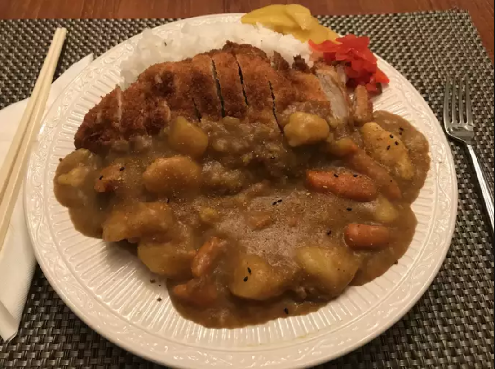

Chicken Katsu Curry

Description
Chicken Katsu is my favorite dish and it's not close.
Chicken breasts are covered in panko, deep fried, and then sliced.
Then served on top of rice along with curry and other optional veggies.
It is common to also serve red and yellow daikon pickles with it.
Ingredients
Curry Sauce
- 1 tbsp oil
- 2 medium garlic; chopped
- 3 medium potatoes; chopped
- 2 medium carrots; chopped
- 3.5 cups water; or as needed
- 3.5 oz curry sauce mixture; e.g S&B Golden Curry
- 1 tbsp ketchup
- 1 tbsp Worcestershire sauce
- 1 tbsp apricot jam
- 1 tbsp soy sauce
- 1 tbsp curry powder
Chicken Katsu
- 4 5oz chicken breast halves; skinless, boneless
- 1/4 cups all-purpose flour
- 1 large egg; beaten, or as needed
- 1 cup panko bread crumbs
- 1/2 cups peanut oil; used for frying, or as needed
Steps
- Make curry sauce: Heat oil in a large pot over medium-high heat.
Cook onions in hot oil until soft and starting to caramelize, about 8 minutes.
Add potatoes and carrots. Pour in water and bring to a boil.
Reduce heat to low, cover, and cook until potatoes are soft, about 45 minutes.
- Remove from heat and stir in curry sauce mix until dissolved.
Add ketchup, Worcestershire sauce, jam, and soy sauce.
Simmer until sauce is thickened, 10 to 15 minutes.
- Meanwhile, make chicken katsu:
Flatten chicken breasts with a kitchen mallet to a thickness of 1/4 inch.
Season with salt and pepper.
- Place flour onto a large plate, add beaten egg to a small plate, and place bread crumbs onto a second large plate.
- Press chicken into flour to coat, dip in beaten egg, and press in bread crumbs to coat generously.
- Heat oil in a large saucepan to 355 degrees F (180 degrees C).
Carefully lower breaded cutlets into hot oil and fry until golden brown, about 3 minutes per side.
An instant-read thermometer inserted into a cutlet should read 165 degrees F (75 degrees C).
- While chicken is cooking, stir curry powder into sauce until incorporated.
- Slice chicken into strips and spoon curry sauce over the top to serve.
Disclaimer
Picture and recipe on this page are courtesy of:
allrecipes.com
. I take no ownership of the recipe nor picture on this page.
This webpage is simply for personal education purposes.
Please take the time to look at their great website for more recipes.
Or click
here
for my other webpages featuring my favorite foods.